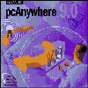

|
|
| 当前位置：电脑报电子版 > 1999 年 > 44 期 > 软件世界 > 用pcAnywhere实现远程控制 |
| 《 用pcAnywhere实现远程控制 》 |
| 随着计算机技术的快速发展，计算机的管理及技术支持，特别是远程办公的需要，远程操作及控制技术越来越引起人们的关注。对于网络管理员、技术服务人员来说，远程控制提供了一种便捷、高效的手段，而pcAnywhere就是远程控制软件中的佼佼者，其最新中文版本为9.0，相较8.0版本有着连接配置方便、控制性能强、文件传输快、安全性高等特点。
功能简介 用作远程被控主机：由一台机器作为控制端，另一台作为被控制的计算机。首先启动需要被遥控的计算机上的pcAnywhere，选择作为被控机，再选择相应的远程控制方式（通过本地网、MODEM、串口直连线等）。作为被控制的计算机，一旦选择了进行被控选择，窗口立刻最小化，成为一个小的计算机图标，放置到systemtray中。用作远程控制主机：要对远程计算机进行控制，首先应在控制机上启动pcAnywhere，选择通过网络远程控制计算机（本文中的远程控制是基于局域网的控制实例，所用协议为TCP/IP）。如果用户事先没有配置要远程控制计算机，则控制端会自动从网络上查询，它可以找到网络上目前正在运行pcAnywhere的所有计算机。找到后，它将列出所有可被控制的计算机清单，供管理员选用。 远程控制：查看远程计算机的配置情况，对远程计算机进行正确地配置。可以通过以下方式连接远程计算机：拨号连接、专线方式、局域网方式、Internet方式。 文件传输：pcAnywhere 9.0支持在远程及本地之间进行双向文件传送，操作过程如同在两个不同的磁盘中进行一样，同时还有文件管理功能。 用作网关：安装pcAnywhere的计算机同时还可以用作网关（pcAnywhere 9.0支持双向网关），一旦接入远程网络或Internet，局域网内外的用户都可以通过它进行资源共享。 远程工作站：远程计算机通过MODEM拨号进入局域网，地位同所拨入的局域网中的一台工作站，对网络内的资源进行按权限存取。 其他：由于pcAnywhere支持TCP/IP协议，所以支持通过Internet对远程计算机进行控制。例如：你在北京，而你朋友在上海，他要求你对他新安装的某一个新的软件进行配置。那么只要你朋友的计算机已接入Internet并且也已经运行了pcAnywhere，你只要通过拨号上本地ISP，通过Internet就可以找到他的计算机，对他刚装入的软件进行配置。而此时你所付的费用仅为本地电话费。想想看，这多好！ 注意事项 为了加速远程PC图像在本地的显示，应取掉远程主机的屏幕壁纸、屏幕保护、取掉显示器的节能设置、将屏幕颜色设置为16色，这样可以减少许多不必要的数据传输。pcAnywhere的评估版可以在http://www.symantec.com处下载，评估时间为30天。 （浙江 薛启康） |
| 下载本期推荐软件 | 页 首 |
| 《电脑报》版权所有，CPCW网站编辑部设计制作发布 |